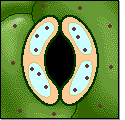

Transpiration
Guard Cell Function

Stomatal closing
Potassium ions move out of the vacuole and out of the cells.
Water moves out of the vacuoles, following potassium ions.
The guard cells shrink in size.
The stoma closes.
Stomatal opening
Potassium ions move into the vacuoles.
Water moves into the vacuoles, following potassium ions.
The guard cells expand.
The stoma opens.
Return to
How Do Guard Cells Function?
Continue to
Transpiration and Photosynthesis
.

 Return to How Do Guard Cells Function?
Return to How Do Guard Cells Function?
Return to How Do Guard Cells Function?
Return to How Do Guard Cells Function?